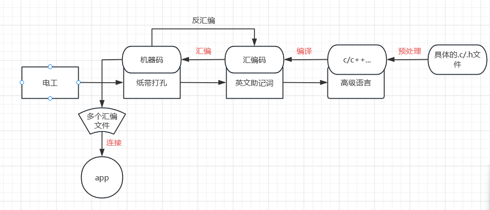
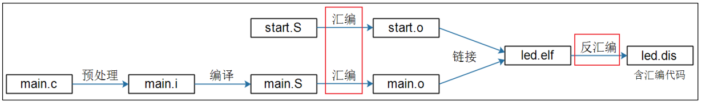

二、gcc编译器
1. gcc编译过程
把一个.c文件要经过预处理(preprocessing)、编译(compilation)、汇编(assembly)和链接(linking)等 4 步才能变成可执行文件。


- 预处理：
- -E 选项告诉编译器只进行预处理操作
-
-o 选项把预处理的结果输出到指定文件
-
编译：
-
-S 选项告诉编译器，进行预处理和编译成汇编语言操作
-
汇编:
-
-c 选项告诉编译器，进行预处理、编译和汇编操作
-
链接：
还可以编译多个文件：
2. gcc常用选项
| 选项 | 描述 |
|---|---|
| -E | 预处理，开发过程中快速确定某个宏可以使用，”-E -dM” |
| -c | 把预处理、编译、汇编都做了，但是不链接 |
| -o | 指定输出文件 |
| -I | 指定头文件路径 |
| -l | 指定链接哪个库文件 |
| -L | 指定链接库文件目录 |
＃include使用的<>代表到编译工具指定的系统目录下去查找头文件，“”代表当前目录下
使用不同的编译工具，其查找的头文件目录也不一样，编译时加上-v选项可以查看详细信息。
比如使用gcc编译,查找的头文件路径：
/usr/lib/gcc/x86_64-linux-gnu/9/include
/usr/local/include
/usr/include/x86_64-linux-gnu
/usr/include
使用交叉编译工具链，查找的头文件路径：
/home/hqyj/100ask_imx6ull-sdk/ToolChain/arm-buildroot-linux-gnueabihf_sdk-buildroot/bin/../lib/gcc/arm-buildroot-linux-gnueabihf/7.5.0/include
/home/hqyj/100ask_imx6ull-sdk/ToolChain/arm-buildroot-linux-gnueabihf_sdk-buildroot/bin/../lib/gcc/arm-buildroot-linux-gnueabihf/7.5.0/include-fixed
/home/hqyj/100ask_imx6ull-sdk/ToolChain/arm-buildroot-linux-gnueabihf_sdk-buildroot/bin/../lib/gcc/arm-buildroot-linux-gnueabihf/7.5.0/../../../../arm-buildroot-linux-gnueabihf/include
/home/hqyj/100ask_imx6ull-sdk/ToolChain/arm-buildroot-linux-gnueabihf_sdk-buildroot/arm-buildroot-linux-gnueabihf/sysroot/usr/include
也可以使用-I来指定头文件目录
所以解决头文件找不到的错误，一个是可以指定头文件目录，第二个是把头文件加入到编译器指定的目录。
使用-l指定库文件时，会去编译器指定的目录查找，如果是自己编译的库，可以把库放到编译器指定的库目录，也可以用-L选项指定库文件所在的目录。
假如我有个动态库：libsub.so，我编译链接库的时候就使用：.... -lsub -L ./
-l使用，需要省略前缀和后缀
如果编译的时候是自己指定的动态库，在执行程序的时候可能找不到相应的库，解决方法是：
- 把动态库文件，放到系统下的/lib目录
- 还可以自己指定目录，比如放在/a目录，然后执行：